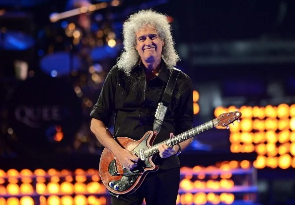
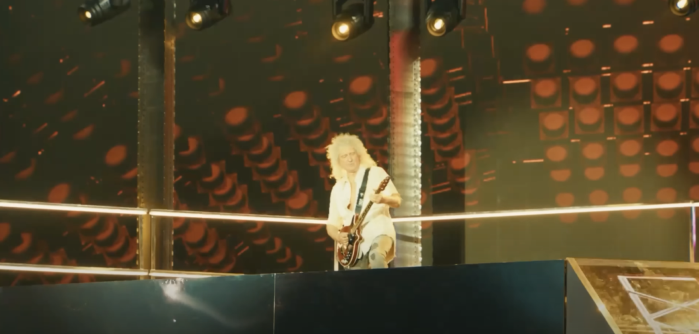
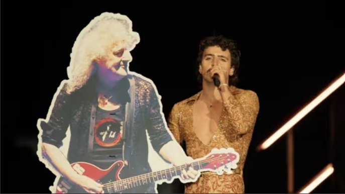

El legendario guitarrista de Queen, Brian May, sorprendió al público en Coachella al subir al escenario junto al cantante Benson Boone para interpretar un emotivo tributo a Bohemian Rhapsody. Este momento fue particularmente significativo porque marca una de sus primeras apariciones públicas importantes después de que en septiembre de 2024 revelara haber sufrido un “mini derrame cerebral” que había puesto en duda su capacidad de tocar la guitarra.
Durante la presentación de Boone, May emergió desde debajo del escenario montado en una plataforma sorpresa para ejecutar el solo de guitarra clásico, generando una ovación de los asistentes. Después permaneció para acompañar el cierre del set con la canción Beautiful Things de Boone. La puesta en escena incluyó coro, luces teatrales, imágenes que remiten a Freddie Mercury e incluso una capa lujosa que evocaba la estética del mismísimo frontman de Queen.
No todo fue emoción cerrada: algunos asistentes del festival aparentemente no reconocieron inmediatamente a Brian May al subir al escenario, lo que provocó variadas reacciones entre fans en redes sociales. Boone, con humor, publicó un video diciendo que estaba intentando que la audiencia entendiera quién es la leyenda que lo acompañaba.
Este episodio no solo representa la recuperación física de May, sino también su retorno artístico y su vigencia como figura influyente. A sus 77 años, sigue siendo capaz de entregar momentos de rock auténtico y de generar impacto generacional, conectando con artistas más jóvenes como Boone y demostrando que su legado sigue muy vivo.